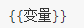
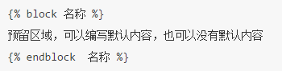

1 配置
在工程中创建模板目录templates。
在settings.py配置文件中修改TEMPLATES配置项的DIRS值：
TEMPLATES = [
{
'BACKEND': 'django.template.backends.django.DjangoTemplates',
'DIRS': [os.path.join(BASE_DIR, 'templates')], # 此处修改
'APP_DIRS': True,
'OPTIONS': {
'context_processors': [
'django.template.context_processors.debug',
'django.template.context_processors.request',
'django.contrib.auth.context_processors.auth',
'django.contrib.messages.context_processors.messages',
],
},
},
]
2 定义模板
在templates目录中新建一个模板文件，如index.html
<!DOCTYPE html>
<html lang="en">
<head>
<meta charset="UTF-8">
<title>Title</title>
</head>
<body>
</body>
</html>
3 模板渲染
调用模板分为两步骤：
找到模板 loader.get_template(模板文件在模板目录中的相对路径) -> 返回模板对象
渲染模板 模板对象.render(context=None, request=None) -> 返回渲染后的html文本字符串 context 为模板变量字典，默认值为None request 为请求对象，默认值为None
例如，定义一个视图
from django.http import HttpResponse
from django.template import loader
def index(request):
# 1.获取模板
template=loader.get_template('index.html')
context={'city': '北京'}
# 2.渲染模板
return HttpResponse(template.render(context))
Django提供了一个函数render可以简写上述代码。
render(request对象, 模板文件路径, 模板数据字典)
from django.shortcuts import render
def index(request):
context={'city': '北京'}
return render(request,'index.html',context)
4 模板语法
4.1 模板变量
变量名必须由字母、数字、下划线（不能以下划线开头）和点组成。
语法如下：

模板变量可以使python的内建类型，也可以是对象。
def index(request):
context = {
'city': '北京',
'adict': {
'name': '西游记',
'author': '吴承恩'
},
'alist': [1, 2, 3, 4, 5]
}
return render(request, 'index.html', context)

4.2 模板语句
1）for循环：

2）if条件：

比较运算符如下：
==
!=
<
>
<=
>=
布尔运算符如下：
and
or
not
注意：运算符左右两侧不能紧挨变量或常量，必须有空格。

4.3 过滤器
语法如下:
- 使用管道符号|来应用过滤器，用于进行计算、转换操作，可以使用在变量、标签中。
- 如果过滤器需要参数，则使用冒号:传递参数。
变量|过滤器:参数
列举几个如下：
safe，禁用转义，告诉模板这个变量是安全的，可以解释执行
length，长度，返回字符串包含字符的个数，或列表、元组、字典的元素个数。
default，默认值，如果变量不存在时则返回默认值。
data|default:'默认值'date，日期，用于对日期类型的值进行字符串格式化，常用的格式化字符如下：
- Y表示年，格式为4位，y表示两位的年。
- m表示月，格式为01,02,12等。
- d表示日, 格式为01,02等。
- j表示日，格式为1,2等。
- H表示时，24进制，h表示12进制的时。
- i表示分，为0-59。
- s表示秒，为0-59。
value|date:"Y年m月j日 H时i分s秒"
4.4 注释
1）单行注释语法如下：

2）多行注释使用comment标签，语法如下：

4.5 模板继承
模板继承和类的继承含义是一样的，主要是为了提高代码重用，减轻开发人员的工作量。
父模板
如果发现在多个模板中某些内容相同，那就应该把这段内容定义到父模板中。
标签block：用于在父模板中预留区域，留给子模板填充差异性的内容，名字不能相同。 为了更好的可读性，建议给endblock标签写上名字，这个名字与对应的block名字相同。父模板中也可以使用上下文中传递过来的数据。
子模板
标签extends：继承，写在子模板文件的第一行。

子模版不用填充父模版中的所有预留区域，如果子模版没有填充，则使用父模版定义的默认值。

填充父模板中指定名称的预留区域。